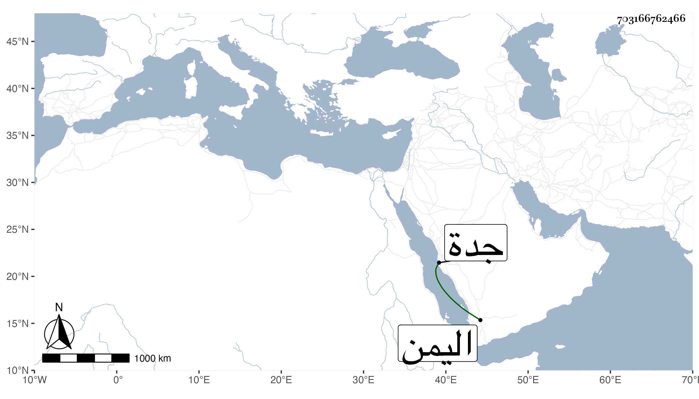

0902Sakhawi.DawLamic.ITO20230111-ara1.EIS1600.703166762466
Biography ID: 703166762466
22
أبو البقاء بن الجيعان آخر . هو المحب محمد بن عبد الملك بن عبد اللطيف الماضي أبوه وأخوه عبد اللطيف . ولد سنة إحدى واربعين وثمانمائة بدرب ابن ميالة من بركة الرطلي وحفظ القرآن وأربعي النووي ومختصر أبي شجاع ولازم الديمي في أشياء ومما قرأه عليه الشكر لابن أبي الدنيا وحج في سنة ثمان وستين واستقر مع أخيه بعد أبيه في جهاته . وهو مفرط السمن منجمع عن كثيرين كتب بخطه من تصانيفي القول البديع وسمع مني اليسير منه ومن غيره . ثم كان ممن رسم عليهما مع المتكلمين في أوقاف الزمام وسافر في أثناء ذلك بحرا مع نائب جدة بعد أن قصدني بمنزلي وودعني فجاور بقية سنته ورجع بعد الانفصال عن الموسم وسلامه على أيضا حين قدمت مع الركب سنة ست وتسعين وتوجه بلاد اليمن فمات بكمران منها في ربيع الأول من التي تليها . وكان لا بأس به رحمه الله وعوضه خيرا وعفا عنه .
